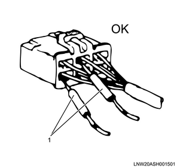

1. Turn off all the switches.
2. Disconnect the battery ground cable from the battery terminal.
Caution
3. Disconnect the battery positive cable from the battery terminal.
Caution
Note
Tightening torque： 3 to 6 N・m { 0.3 to 0.6 kgf・m }
Caution
Insert the probe of the circuit tester from the harness side of the connector as indicated in the diagram below and check the continuity.

Never insert the metal rod from the connection opening area of the connector, as this will cause the connector terminals to break.
For waterproof connectors, the probes of the tester cannot be inserted from the wiring side due to the structure of the connectors. Therefore, perform the continuity inspection as indicated in the diagram by connecting a testing connector prepared in advance to the connector to check, and connect the probes of the tester to the harness of the testing connector.
1. Unlock any double-locks.
2. As indicated in the diagram below, insert a thin screwdriver-shaped metal rod from the connector opening area.
3. Push the lock in the direction of the arrow using the metal rod to release the lock, and pull out the harness together with the terminal.